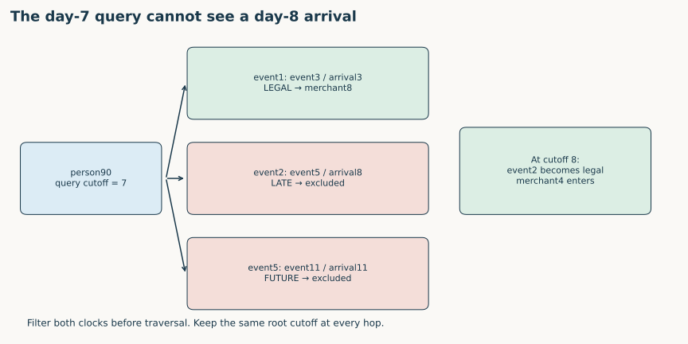
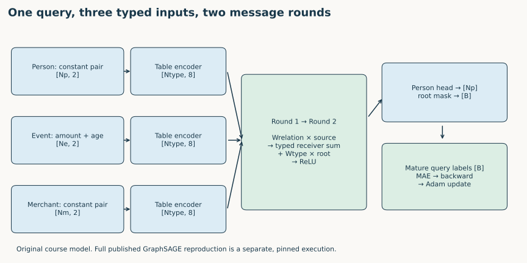

Year 3 · Quarter 4 · Lesson 120
Year 3 exit exam: a heterogeneous temporal GNN
Year 3 exit · from assembled parts to a defensible system
Your win: build and defend a heterogeneous, temporal PyG predictor whose graph, batches, training labels and reported score refer to the same legal prediction questions.
Student notebook · Executed reference · Exam submission · Quick reference · Full reproduction contract
This is a deliverable-based exam. Start with the closed-notes questions, then implement the five functions in the notebook. Consult the worked explanation when stuck; record the assistance in your submission. Plan several one-hour sessions for implementation, full-paper reading, execution and defense. Finishing this page is not the Year 3 exit criterion.
1 · Retrieve the contracts before writing code¶
Without opening previous lessons, answer these questions:
- Why does a foreign key equal to 90 not necessarily point to row 90?
- A result occurred on day 5 and arrived on day 8. Can a day-7 prediction use it?
- The same person appears in two queries at different times. Must their sampled graphs be identical?
- Which nodes receive the supervised loss in a sampled batch? Which may still receive gradients indirectly?
- What evidence would establish that your code ran, and what additional evidence establishes that you understand it?
Check the contracts after attempting retrieval
Primary keys identify entities; array positions identify storage locations. Day-7 queries cannot use a day-8 arrival. Query identity includes entity and cutoff, so repeated entities can have different legal neighborhoods. Supervise query roots only; context representations can receive gradients through their messages. Executed artifacts establish reference behavior; an independently produced graph, implementation, leakage explanation and written defense establish learner performance.
Lesson 100 supplies heterogeneous graph discipline; Lesson 110 supplies time discipline; Lesson 116 supplies diagnostic discipline. Lesson 119 asks what the resulting evidence actually supports. This exam joins those contracts.
2 · Draw the relational entity graph by hand¶
A relational entity graph (REG) gives each table row its own node and each valid primary/foreign-key match its own typed edge. Reverse edges permit information to flow in the opposite direction; they do not add a second database fact. This is the construction in Fey §3.
Our small course database has three people with keys [90,10,70], two merchants with keys [8,4], and six event rows:
| Event row | Person key | Merchant key | Event day | Available day | Amount |
|---|---|---|---|---|---|
| 0 | 10 | 8 | 2 | 2 | 1 |
| 1 | 90 | 8 | 3 | 3 | 2 |
| 2 | 90 | 4 | 5 | 8 | 4 |
| 3 | 10 | 4 | 9 | 9 | 8 |
| 4 | 70 | 8 | 4 | 4 | 3 |
| 5 | 90 | 4 | 11 | 11 | 16 |
Draw all eleven nodes first. Label table types and write the forward and reverse edge types. Then circle the two-hop neighborhood for (person90, day7). Person and merchant attributes are immutable in this authored fixture; real changing dimension attributes need version/availability histories too.
Worked trace: person90 maps to person row0. Its event1 is legal at day7, event2 is late, and event5 is future. The two-hop graph therefore contains person90, event1 and merchant8. The event0 belonging to person10 is a third hop away through merchant8. At day8, event2 and merchant4 enter the graph. Neither a longer path nor a timeless merchant authorizes a future event.
TODO 1 — key_edges: map foreign keys into row positions; reject duplicate primary keys and dangling references. A missing foreign key creates no edge. The CHECK deliberately uses keys that differ from row positions.
3 · Preserve the query boundary through extraction and batching¶
For a query at time t, each event must satisfy event_time ≤ t and available_time ≤ t. We remove illegal events before traversal, then apply the hop budget to this legal graph. The root cutoff stays fixed throughout traversal. This course contract explicitly adds availability time; the released F1 benchmark lacks real ingestion histories, so its timestamps cannot prove that every historical feature was actually available. Fey §3.3 and appendices.


TODO 2 — visible_rows: implement both comparisons. The boundary CHECK distinguishes arrival7 from arrival8 for a day7 query.
The provided extractor returns a real PyG HeteroData object. Each query gets a separate graph, even if two queries mention the same person. Batch.from_data_list concatenates nodes by type and offsets edge indices; n_id records original row identity, while local edge indices address the concatenated tensors. PyG batching documentation.
TODO 3 — seed_positions: locate query roots from their Boolean masks after batching. Do not assume they are the first B person nodes. The CHECK inserts extra context people so that correct roots are [2,3], not [0,1]. A separate test compares batched predictions against individual predictions: disjoint batching must not transmit information between queries.
4 · Follow a complete forward pass, then train¶
The small exam model is an original teaching model, separate from the published RelBench model. It uses the learner's graph construction, visibility, typed aggregation, seed mapping and loss in an actual training loop.


Diagram trace. Compare the course predictor with the paper lane. Which input widths and encoder choices differ, and where do query labels enter? On a narrow screen, scroll the figure sideways.
Each node has two input channels. Events carry amount and age (query_day − event_day)/10; people and merchants use constant features in this fixture. A separate linear encoder for each table maps [N_type,2] to [N_type,8]. In each of two synchronous rounds, a relation-specific linear map transforms source states, and the receiver sums messages along that relation's edges. The model adds a type-specific root transform and applies ReLU. A scalar head reads person states; the root mask selects one prediction per query.
For relation r: s→d, a message is W_r h_s; the receiving state is ReLU(W_d h_d + sum_r sum_neighbors W_r h_s). All messages in a round use the previous round's states. There are distinct parameters for event→person and person→event. That makes direction and table type part of the computation.
TODO 5 — typed_messages: accumulate into the receiving table at the receiving local index. Multiple incoming edges must sum; assignment that overwrites the previous message is incorrect. The model applies its relation-specific transforms before calling your function.
TODO 4 — seed_loss: calculate mean absolute error only at query roots, rejecting training labels unavailable by the fit cutoff. Input visibility is checked at each query's prediction time; label maturity is checked at the model's fitting time. These are different clocks. A day7 question can legitimately train a model fitted at day10 using an outcome that became available on day9.
The default notebook trains on six authored queries at days4/7, whose synthetic next-period labels are mature by day10. It runs 120 optimizer steps and predicts two day10 queries. It verifies that the training loss falls and that batching preserves predictions. There is no held-out target score or model selection in this tiny mechanism exercise; falling training loss is not evidence of generalization.
Predict the direct gradient mask before running the CHECK. Context nodes must have zero direct supervised-output gradient, but may receive gradients indirectly through messages. This distinction is the point of the exercise, not a reason to detach context features.
5 · Execute and audit the full selected experiment¶
The full-data track uses the pinned RelBench release's per-table PyTorch Frame encoders, relative-time encoders, two heterogeneous GraphSAGE layers and regression head. It retains the full visible implementation and trainer from Lesson 117. The small exam network above is not substituted for that model. RelBench §3 and Appendix B.

Diagram trace. Compare the course predictor with the paper lane. Which input widths and encoder choices differ, and where do query labels enter? On a narrow screen, scroll the figure sideways.
The exact target is RelBench v1 Table 7, F1 driver-position, RDL column. We execute five fresh seeds, all ten epochs, all 7,453 training queries per epoch, all 499 validation queries and all 760 test queries. Checkpoints are selected by validation MAE. Freeze the descriptive mean tolerance at 0.2 MAE before inspecting results; use the test set only after selection. The historical published means are 3.193 validation and 4.022 test.
Fresh author-reference execution: COMPLETE selected released-protocol experiment.
| Split | Mean MAE | Sample seed SD | Published mean | Verdict |
|---|---|---|---|---|
| val | 3.184459 | 0.010072 | 3.193 | CLOSE |
| test | 4.071967 | 0.075394 | 4.022 | CLOSE |
| Seed | Selected epoch | Validation MAE | Test MAE |
|---|---|---|---|
| 0 | 10 | 3.177127 | 4.062903 |
| 1 | 8 | 3.182222 | 4.143431 |
| 2 | 10 | 3.179105 | 4.112558 |
| 3 | 10 | 3.181749 | 3.947681 |
| 4 | 7 | 3.202094 | 4.093262 |
All 6,295 final predictions were independently scored. Maximum original-model output discrepancy: 2.86e-06. Measured pilot plus full-fit worker resource estimate: USD 0.0545, excluding unitemized overhead. The aggregate plan caps reservations plus overhead reserve at USD 10. Evidence.
The reproduction audit checks data/source hashes, every epoch, selected checkpoint hashes, query entities/timestamps/targets, independent MAE, and original-model output agreement. Sample seed standard deviation describes these five runs; it is not a confidence interval across datasets or a claim of statistical equivalence.
Read the deviation ledger before making claims: released fanout [128,64] differs from the paper table's128; source preprocessing fits statistics on the database censored at the test cutoff; original historical seed/environment identity is unavailable; real ingestion histories are absent. The executable course leakage checks establish the both-clock contract on controlled data, not on unavailable F1 histories. Full-paper parity remains NOT_ESTABLISHED.
For fresh execution, follow the exact commands and pinned runtime in the contract. The notebook shows the complete model/trainer and has an OFF-by-default five-seed gate; executing the default reference notebook does not repeat the separate GPU reproduction. The runner reserves compute before dispatch and prevents duplicate launches or source changes under an existing ledger.
6 · Submit the exit artifacts and defend them¶
Use the submission template. Submit your hand-built REG, five implemented functions, executed notebook, task report, full-run evidence or a clearly labeled audit of author evidence, leakage counterexample, and written defense. The template distinguishes your own executions from inspected reference artifacts.
Read all of Fey 2024, including appendices. For each entry in the reading ledger, record a section/page, a claim in your own words, its evidence type, and one limitation. Reading the lesson or passing code tests does not complete that requirement. Fey is a position/blueprint paper; the later RelBench v1 experiment is a separate empirical target, not a reproduction of every Fey appendix result.
Score each of six domains 0–2: REG construction, temporal validity, mini-batch identity, model/training explanation, reproduction evidence, and full-paper defense. Zero means missing/incorrect; one means correct with unresolved assistance or gaps; two means independently correct with evidence. Exit requires at least 10/12, no zero, and a completed full-paper ledger. Any unresolved leakage, mislabeled evidence, or missing complete working pipeline blocks exit regardless of total.
Current learner status: PENDING_WRITTEN_DEFENSE. The executed teacher solution does not change that status. Explain one failure your tests catch and one they cannot establish. Then predict what changes when event2 arrives one day earlier, the hop count increases, or query roots are permuted.
Ask the agent follow-up questions whenever a step is unclear; name the node, tensor or cutoff where the trace stops making sense. In 1, 7 and 30 days, redraw the query graph and reconstruct the loss mask without notes. Lesson 121 begins Year 4's history of relational ML after this exit is demonstrated.
Carry this forward. Use the historical map to understand why the Year 4 design choices exist. Continue to Lesson 121.